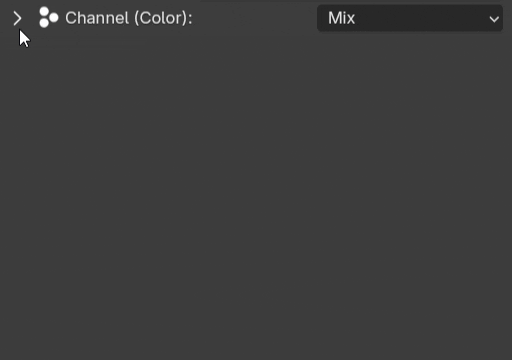
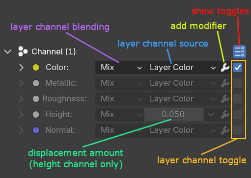
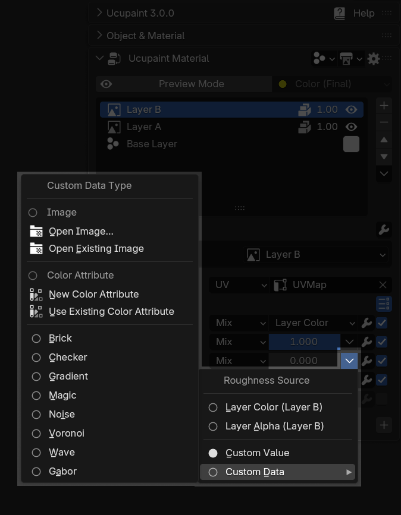
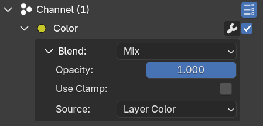
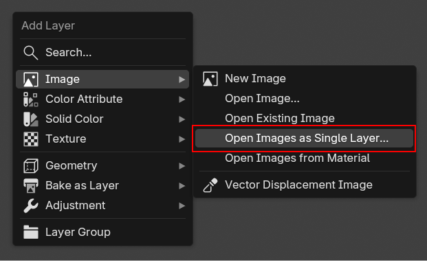
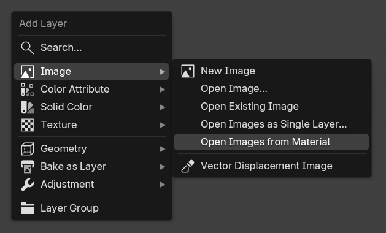
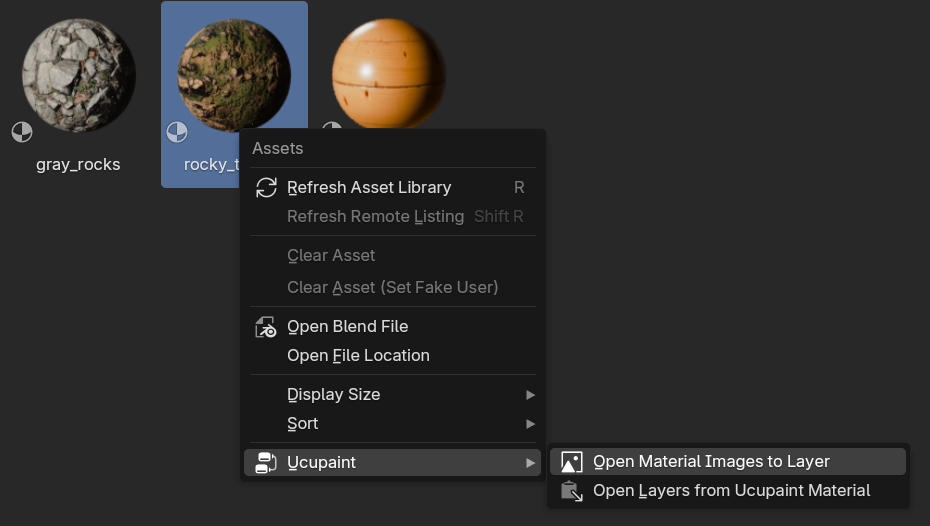

Layer Channel¶
The layer channel is a bridge between layers and channels. You can choose which channel(s) your layer will affect.
Layer channel blending¶
By default, you’ll get the option to change the blending mode of the channel you select when you create the new layer.
| Changing blending mode of default enabled channel |
Layer channel panel¶
You can do more than blending for the layer channel, if you click the triangle, you'll see all the channel options.
 |
|---|
| Layer channel panel has multiple levels of UI dropdown |
Every channel that you can use in a layer has its own blending, sources, and modifier stacks.
 |
|---|
| Layer channels legends |
Enabling layer channel(s)¶
To enable the channel in a layer, you can just tick the checkbox toggle beside the channel. You can enable multiple channels at the same time, and the default value that contributes to the channel is the layer color.
| Enabling multiple layer channels |
Change layer channel source¶
By default, the layer color is the data that is used to contribute to the channel, but you can change the source to a different data.
Change layer channel source to use custom value¶
For multiple channels in a single layer, one of the most useful sources is a custom value, it will change the painted area to use only a single value, useful to set the metallic and roughness of the painted area independently.
| Change layer channel source to custom value |
Change layer channel source to use custom data¶
Other than a custom value, you can also use custom data for the channel source.
 |
|---|
| Custom data that you can choose |
Custom data can be an image, color attribute, or textures.
| Changing layer channel source to use noise |
Layer channel options¶
 |
|---|
| Options for color layer channel |
Channel panel in a layer has various options depending on the channel type. All channel types have at least these options:
- Opacity: Opacity of the layer channel. The value will be multiplied by the layer's opacity.
- Blend: Blend type of the layer channel
- Use Clamp: Clamp the value of the layer channel to 0.0 minimum and 1.0 maximum value
- Source: Source for the layer channel, by default, it uses the layer's color value.
Height layer channel options¶
Height layer channel has extra options. Those are:
- Scale: Height scale in object space.
- Midlevel: The baseline value to define the zero height. By default, it uses 0.5 (gray) value, which means white color will become bumps, and black color will become creases.
- Use As Normal Only: Enabling this will convert the height channel to a normal channel, which means the height bump value will be blended through the normal channel
Normal layer channel options¶
Normal layer channel has extra options. Those are:
- Strength: Strength of the normal.
- Space: Normal space that will be used.
Vector Displacement layer channel options¶
- Strength: Strength of the vector displacement.
- Flip Y/Z: Some VDM maps can have different which axis pointing upward, so flip Y/Z can be useful to switch the axis.
Special alpha layer channel behavior¶
Alpha channel is a special channel that is paired with the color channel. If the color channel is enabled in a layer, the alpha channel will also be enabled and the individual options of opacity and blending will disappear and will follow the color channel instead
Load PBR images¶
Using custom data, especially images, can be useful to assign each channel to the respective image from PBR image texture packs. There are a lot of sites that you can use to download PBR texture images, like ambientCG or Poly Haven.
You can either use Open Image to load an image as a layer channel custom data one by one, or you can automatically assign images to the respective channel by choosing Open Images as Single Layer when creating a new layer.
 |
|---|
Open Images as Single Layer menu when creating a new layer |
Open images as single layer automatically detects suffixes in the image filename to determine which image corresponds to which channel. Ucupaint assigns channels based on whether the channel name (or any of its synonyms) appears at the end of the image filename.
| Channel Name | Synonyms |
|---|---|
| Color | Albedo, Diffuse, Base Color |
| Alpha | Opacity |
| Ambient Occlusion | AO |
| Metallic | Metalness |
| Roughness | Glossiness, Smoothness |
| Height | Displacement, Bump |
Load PBR images using Open Images as Single Layer |
There’s a chance you may load both a normal map and a height map. Because using both sometimes can produce an exaggerated, doubled normal effect in many PBR image sets, Ucupaint includes a Height/Normal Map Priority option to control which one should be used. By default, Ucupaint prioritizes the height map.
Load PBR images from Material¶
Other than loading the images directly, you can also load PBR images used in a material. There are two ways to do it, you can use Open Images from Material in the new layer menu or by right-clicking a material asset in the asset browser
 |
 |
|---|---|
Open Images from Material on new layer menu |
Right-click on material asset in asset library |
Loading images from a material operator will check the images that are connected to the Principled BSDF and if found, use them for the layer channel source. So make sure your material is using actual images rather than procedural nodes.